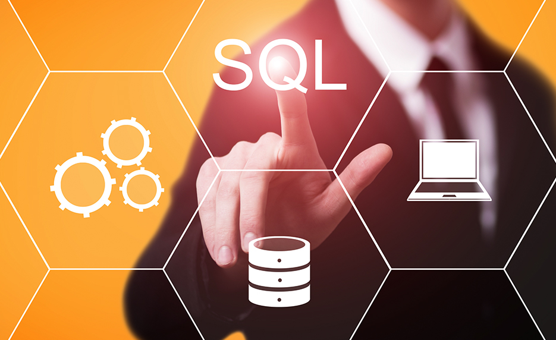

Welcome To
SQL PROJECTS PAGE
This page contains all projects that were done in SQL.

What is SQL and why it is important for data analysts?
SQL (Structured Query Language) is a Database Management language. It has been around since the 1970s and is still the most popular way to access data in Databases today. SQL provides a number of operations that enable users to read, manipulate, and alter data. SQL is widely used by engineers in software development, but it is also widely utilized by data analysts for a variety of reasons:
- It's simple to grasp and learn from a semantic standpoint.
- Analysts don't have to copy data into other programs because they can access enormous amounts of data immediately where it' kept.